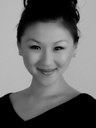

Keke
Founder, Artistic Director, Choreographer and Teacher
Born in Beijing, China , Ke Ke is the founder, choreographer, and principal instructor of Angel Performing Arts.
Ms. Ke Ke's career in dance started at an early age in Beijing where, after years of training, she joined the Beijing Dance Academy in 1998. Ms. Ke Ke quickly became a recognized figure in China's national dance scene/circuit, acclaimed for roles she played in various nationwide dance productions. While maintaining an active dance schedule, Ms. Ke Ke's involvement in dance instruction brought her to Central China Television (CCTV) where she quickly developed a reputation for her work as a dance instructor for some of China's best-known film and TV actors.
Ms. Ke Ke's dance career eventually took her abroad to the United States in 2002. She first served as a dance instructor for numerous dance companies in Greater Chicago. In 2002, she established Angel Performing Arts Company in Greater Chicago as a dance academy dedicated to passing on the rich traditions of Chinese performance art. At the end of 2004, Ms. Ke Ke relocated to Boston, along with Angel Performance Art Inc. Angel Performing Arts Inc. continues to provide a dance curriculum for those interested in learning authentic Chinese Dance as an art form.
Ms. Ke Ke has become recognized throughout New England as one of the leading choreographers and teachers of traditional and ancient Chinese dance. Her core dancing program offers structural training in classical, contemporary, ethnic, and Chinese folk dance for students of all ages and abilities, with instruction provided through classes and workshops, lectures and demonstrations. In addition to the multiple roles she plays at Angel Dance Troupe and Angel Dance School , Ms. Ke Ke has also lent her talents as an instructor and choreographer to many dance companies in the Greater Boston area.
Since the establishment of Angel Dance School, Ke Ke has choreographed and directed more than sixty outstanding dances, including "In the Depth of Bamboos", "Plum in Snow", "Lily in the Wind" and "Dancing Youth". With a firm belief and vision to mingle the Chinese dance into U.S. mainstream dances, Ke Ke has reached out and cultivated extensive relationship with her American colleagues and has been widely recognized and acclaimed. She will continue to fully devote herself to prosper and diversify Boston's dancing with her determination to bring home Chinese folk dances to American public.